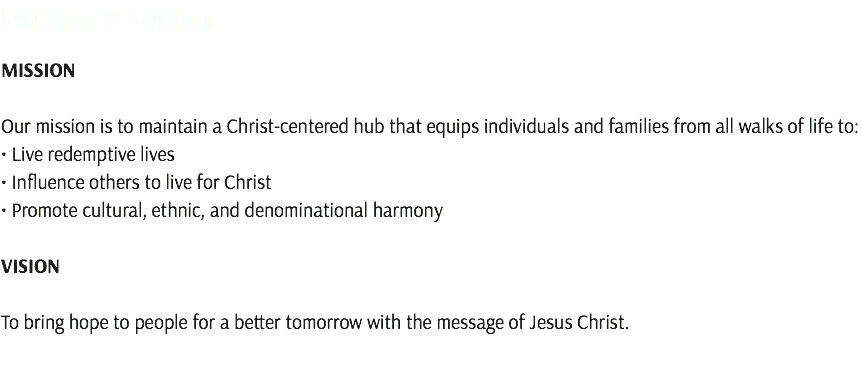
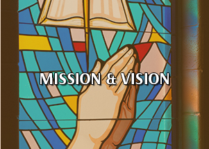
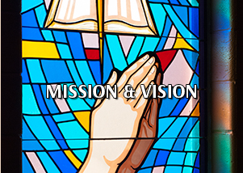
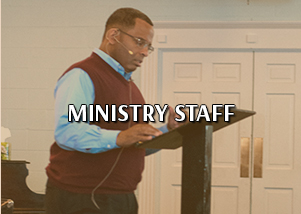
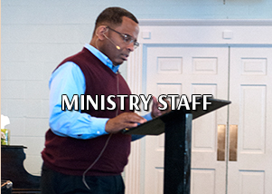
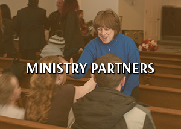
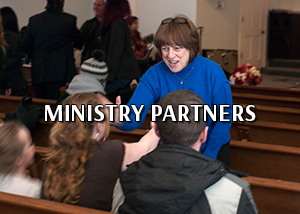

     
![We hope you will sense the power of our Lord and Savior Jesus Christ and the love He has for you as you view and discover the work of this body of believers. Feel free to learn more about us here and then come visit us in person. Our logo portrays the cross, which is central to all that we do, and all that we are. The grain in the cross symbolizes the coming together of varied grains, which lose their identity and gain a new identity when joined together to make bread. We are a church that welcomes and expresses the diversity of the Body of Christ.](images/u947-7.png)
![Dr. Kevin Rowan Th.D
Senior Pastor Bio:
Accepted Christ February 18, 1980. Married to his spouse, Sharon, since August 31, 1996. From their blended family are 4 children: Ramica (Jonathon), Sheri, Paige, Kevin Jr. and 4 grandchildren: Kristin, Josiah, Lauren, Jacob. A member of the Bread of Life since April 1986. Served in a number of positions including; Church pianist, Youth Director, Deacon, Sunday School Teacher, Church Trustee, Church Finance Committee, Armor Bearer, Lay Minister, Associate Pastor, Senior Pastor](images/u2522-11.png)
![Ministry Partners Avenue of Life is committed to equip and mobilize the community. Their goal is to facilitate the journey from hand-outs (emergency relief) in crises, to hand-ups (individual betterment) for those ready to rise above their circumstances, to hand-offs (community development) to indigenous leaders of a transformed community. Bread of Life partners with Avenue of Life as an outreach site. We use our facilities to host Avenue of Life’s mission teams and distribute emergency relief services to disadvantaged families. Amani Christian Missions Kenya is a non-political and non-profit outreach organization focused on restoring hope in the lives of orphaned and vulnerable children, widows, and the less fortunate across Kenya. Bread of Life East is an extension church of Bread of Life Outreach Ministries. It is located at 7223 E. Bannister Rd in Kansas City, MO. Christ Lutheran Church of Overland Park, KS is a key financial supporter of Bread of Life. They have partnered with us for several years to provide crucial funding to assist us with carrying out our ministries. God’s Mountain Camp in Rushville, MO is a donation-based camp available for use by Christian organizations. The youth of Bread of Life have attended summer camp there since 2001. Harmony Vineyard Church is located in north Kansas City, MO. They are committed to creating a culture of Spirit-empowered disciple-making movements. Strand of Three is a non-profit public charity that exists to let those who may feel unloved, unnoticed, and forgotten know that they matter in this world. Zoe is a simple, unique, and valuable research-based approach to help couples prepare for marriage.](images/u1491-36.png)